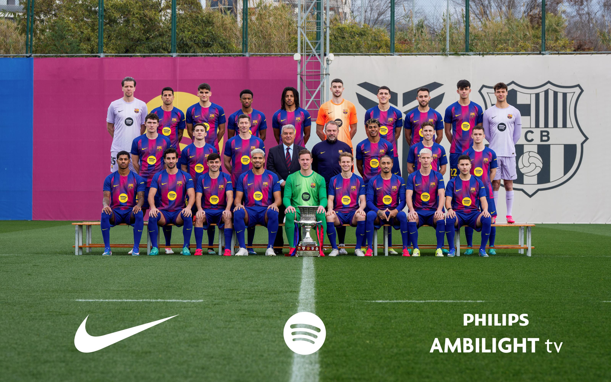

| Kapusok | |||
|---|---|---|---|
| Név | Mezszám | Nemzetiség | |
| Joan Garcia | #1 | Spanyol | |
| Wojciech Szczesny | #13 | Lengyel | |
| Dominik Livakovic | #25 | Horvát | |
| Védők | |||
|---|---|---|---|
| Név | Poszt | Mezszám | Nemzetiség |
| Joao Cancelo | Bal/Jobbszélső védő | #2 | Portugál |
| Alejandro Balde | Balszélső védő | #3 | Spanyol |
| Pau Cubarsí | Belső védő | #5 | Spanyol |
| Xavi Espart | Jobbszélső védő | #12 | Spanyol |
| Andreas Christensen | Belső védő | #15 | Dán |
| Gerard Martín | Belső védő/ Balszélső védő | #18 | Spanyol |
| Jules Kounde | Jobbszélső védő/ Belső védő | #23 | Francia |
| Eric Garcia | Jobbszélső védő/ Belső védő | #24 | Spanyol |
| Középpályások | |||
|---|---|---|---|
| Név | Poszt | Mezszám | Nemzetiség |
| Brian Farinas | Középpályás | #4 | Spanyol |
| Pablo Gavi | Középpályás | #6 | Spanyol |
| Fermín Lopez | Támadóközéppályás | #7 | Spanyol |
| Pedri | Középpályás | #8 | Spanyol |
| Rodrigo | Védekezőközéppályás | #16 | Spanyol |
| Dani Olmo | Támadóközéppályás | #20 | Spanyol |
| Frenkie De Jong | Középpályás | #21 | Holland |
| Marc Bernal | Védekezőközéppályás | #22 | Spanyol |
| Támadók | |||
|---|---|---|---|
| Név | Poszt | Mezszám | Nemzetiség |
| Gabriel Jesus | Csatár | #9 | Brazil |
| Lamine Yamal | Jobbszélső támadó | #10 | Spanyol |
| Raphinha | Balszélső támadó/ Csatár | #11 | Brazil |
| Karim Adeyemi | Jobb/Balszélső támadó | #14 | Német |
| Anthony Gordon | Balszéső támadó | #17 | Angol |
| Roony Bardghji | Jobbszélső támadó | #19 | Svéd |
| Jesse Bisiwu | Balszéső támadó | #27 | Belga |
| Hamza Abdelkarim | Csatár | #29 | Egyiptomi |
Főoldal: FC Barcelona
Sikerek: FC Barcelona sikerei